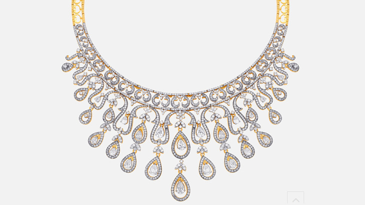
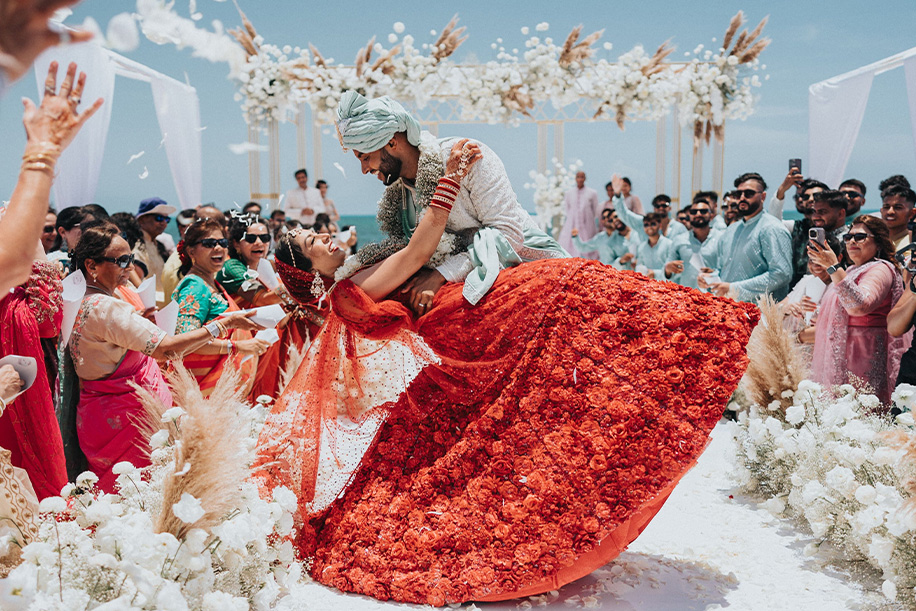
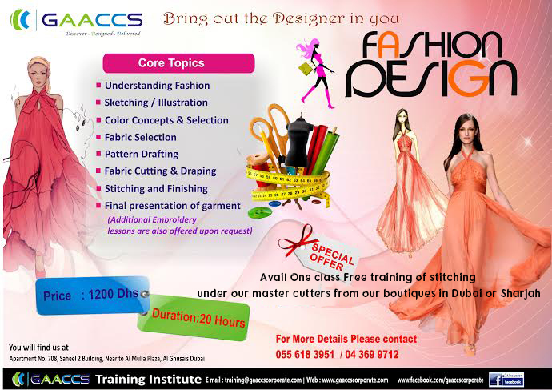

Fashion Designs

Fashion Design is the art and process of creating clothing, footwear, and accessories by combining creativity, aesthetics, and functionality. It involves designing styles that reflect culture, trends, and individuality while ensuring comfort and practicality. In simple words, fashion design is the craft of turning ideas into wearable art.
Designers

Designers in fashion technology are professionals who combine creativity with modern tools and technology to design clothing, accessories, and footwear. Unlike traditional designers, they also use advanced techniques like computer-aided design (CAD), 3D printing, smart textiles, and sustainable materials to create innovative and functional fashion.
Jewellery
Jewellery is an important part of fashion technology, as it enhances clothing and expresses personal style. In modern times, jewellery design has moved beyond traditional methods to include advanced technology, innovative materials, and global trends. Complements clothing and completes the overall look. Represents culture, tradition, and personal identity. Used in fashion shows and styling to highlight designs.
Weddings
Wedding fashion is one of the most significant areas in fashion technology because it combines tradition, luxury, culture, and modern design innovations. Designers in this field create bridal wear, grooms outfits, and accessories that reflect both heritage and global fashion trends. Preserves culture and tradition. Enhances style, beauty, and confidence on a special day. Wide variety of choices due to fashion technology. Overemphasis on luxury can lead to wastage and unsustainable practices.
Offers
Offers in fashion technology are not just about discounts, but also about marketing, customer satisfaction, and innovation. When balanced with quality and sustainability, offers can benefit both consumers and the fashion industry. Discounts during festivals, end-of-season sales, or wedding seasons. Flash sales, coupon codes, buy-one-get-one (BOGO), and cashback deals on apps/websites. Rewards, loyalty points, and exclusive discounts for regular customers. Discounts for recycling old clothes or buying eco-friendly products.